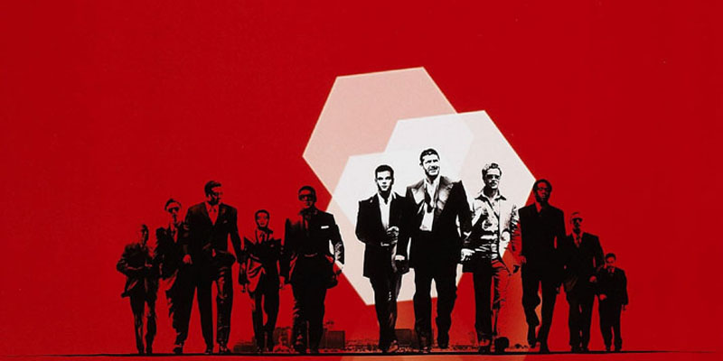
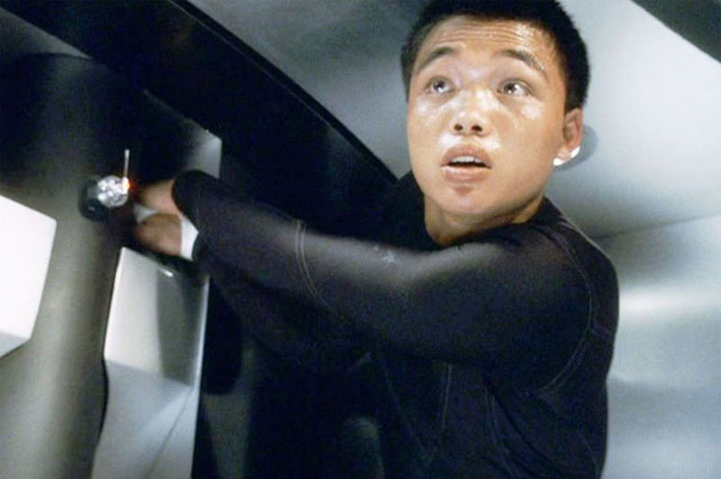
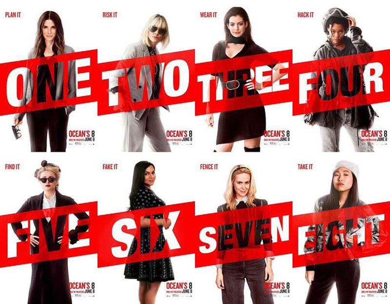
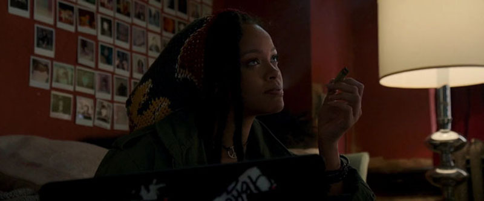
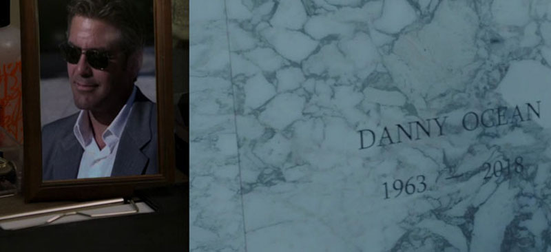

Ocean's 8 | Honest Review by Jithin J Prasad A Good Spin-Off To The Original Ocean's Trilogy

Posted By : Jithin J Prasad | Date : 25-08-2018
Heist genre? You mean Ocean's 11? Can't complain if someone gave this replay, because the Ocean's film series got some of the best heist movies in the whole world.
It's been a while since we saw the George Clooney version in which he reprise his role as Danny Ocean, if you love Danny Ocean then you got a good news and a bad news to cop up with the good news is Dany's got a sister Debbie Ocean(Played by Sandra Bullock) , the bad news is he's dead (1963 - 2018).

As we all know that the Ocean's series means conning someone to get a big payout, that repeats here too. Except for which the main characters are females and they are not stealing from just one person.
Debbie's been jailed for 5 years for committing felony which she had nothing to do with and she got released on a parole soon with the good behavior she's been showing in the jail, soon as she's released she ha've joined forces with her partner Lou (More like Brad Pitt's Rusty Ryan) and plans for a big heist, duh! well you can't complain especially considering the fact that's it's in her blood, and yeah they been recruiting several women for the job to keep a low profile since police tend to ignore women being top rated criminal(s) (that's just a little bit or too much of feminism). Whatever, they recruited a crew and plan's the heist and as usual like the cliché we could've predict this one's got a happy ending.
The Pro's
The Cast:Sandra Bullock,Cate Blanchett,Anne Hathaway,Rihanna,Mindy Kaling,Sarah Paulson,Awkwafina,Helena Bonham Carter,Richard Armitage,James Corden,etc.. They are just wonderful, good acting with lots of humor sense, especially the part where James Corden showed up.
The Womance or what you call it Sismance and partnership between Sandra Bullock and Cate Blanchett is amazing, their chemistry is some top level stuff(s). Just like George Clooney and Brad Pitt in the original Trilogy.
Ocean's 8 Show's that women can do a good spin-off to a well established franchise by men, gotta give it to that thought.
The heist scene's were almost realistic ,just like a typical Ocean's movie they pulled it out right.
Remember the all flexible "The Amazing" Yen (Played by Qin Shaobo) who could even fit himself in a small box? well he's going to be in this too, and yeah you're goanna like his part.

I've got to mention this, damn Rihana's acting skills went through the roof, trust me when I say She's good. I didn't mentioned the other's since most of them are either an Academy/Golden Globe Winner/Nominee. The Ladies nailed it.


The Con's
Feminism is good but this is way too much of feminism, damn the only good dude(character) with long dialogue(s) is James Corden's John Frazier,an insurance fraud investigator. Every other men got almost or no dialogues except for the negative character Claude Becker played by Richard Armitage.
Elliott Gould and Shaobo Qin reprised their roles as Reuben Tishkoff and "The Amazing" Yen,no reference for any other lead character's in the original trilogy is there, oh oh oh wait wait I got it,I got it, They did showed a picture of Danny Ocean (George Clooney) and mentioned his name which apparently were written in a, well you guessed it a cemetery. Apparently that's how spin-off's be like but they could have mentioned it in some place. Just like they mentioned Gru in Despicable Me spin-Off Minions and Goku in Dragon Ball Z spin-off Barock: Father of Goku.
I don't know wheatear you like it or not but giving a guest role to the so called youngest self made Billionaire who made her fame and Billion($900 Million but for Forbes she's already a Billionaire) by the family influence and the 100's of Million’s which her family gave to her.(I know it’s kind of like a bad thing to say but sometimes you got to say what you got to say right?

Final Verdict: You are bored and want to spend your time watching a good movie? Then don't think twice to watch Ocean's 8, it's good. I’ll give it a 3.55/5.
You can Check the more about the movie from Ocean's 8